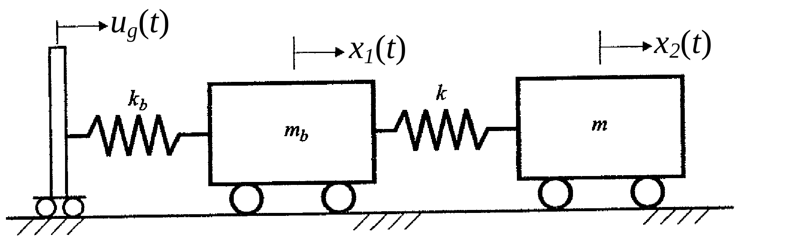
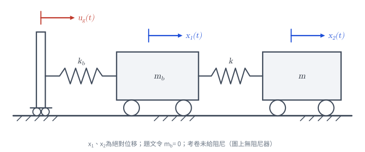
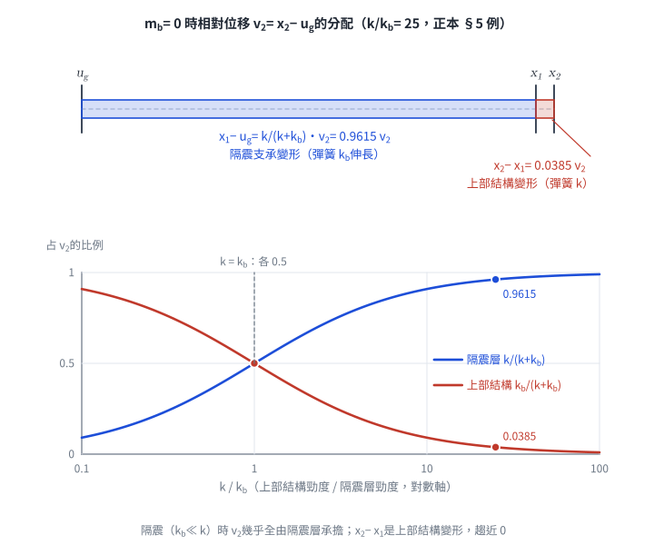

📄 題目正本：考卷原文・附圖・判讀清單（已確認）
SD-2004-2 題目正本
本檔只記錄考卷上寫了什麼、圖上畫了什麼，不含任何解法。解析見同資料夾
SD-2004-2.md。
判讀清單經使用者確認前，狀態為「待確認」；確認後本檔原則上不再修改（改動須回考卷原圖並記 log）。
| 項目 | 內容 |
|---|---|
| 考卷 | raw/exams/SD-2004_結構動力分析與耐震設計.pdf，第 1 頁（正面），第二題 |
| 考年 | 2004（民國93年）專技高考結構工程技師「結構動力分析與耐震設計」 |
| 配分 | 15 分 |
| 附圖 | SD-2004-2-fig-1.png（舊擷取，u_g(t) 標籤上有滑鼠游標）、SD-2004-2-fig-2.png（2026-11-16 由考卷 500 dpi 重擷取） |
| 判讀狀態 | 已確認（2026-11-16，使用者授權依 Claude 建議。原轉錄：2026-11-16 轉錄；PyMuPDF 110 dpi 整頁＋500 dpi 局部放大，PDF 文字層核對原文；盲讀於開啟解析前完成） |
1. 考卷原文（逐字）
二、下圖所示為一個隔震結構的簡化模型，其中 $m_b$ 及 $k_b$ 為隔震層之質量及勁度，$m$ 及 $k$ 為原結構之質量及勁度，$u_g(t)$ 為地震位移輸入，$x_1(t)$ 及 $x_2(t)$ 為絕對位移。假設隔震層之質量很小可近似為零，即 $m_b=0$，試推導出該隔震結構之運動方程式（可化簡為單自由度），並求出自然振動周期（以 $m$、$k$ 及 $k_b$ 表示）。（15 分）
（「周期」照考卷原文。）
2. 考卷給的公式、附表與參數
- 考卷沒有給參考公式。
- 給定（全部為符號）：隔震層質量 $m_b$（並令 $m_b=0$）、隔震層勁度 $k_b$；原結構質量 $m$、勁度 $k$；地震位移輸入 $u_g(t)$；絕對位移 $x_1(t)$、$x_2(t)$。
- 考卷沒有給：任何數值、阻尼（圖上沒有阻尼器、題文沒有阻尼比）、初始條件。
- 卷首注意事項：㈠不必抄題，作答時請將試題題號及答案依照順序寫在試卷上，於本試題上作答者，不予計分。㈡可以使用電子計算器。考試時間：二小時。
3. 附圖

證據圖 SD-2004-2-fig-2.png（500 dpi 重擷取）；舊圖 SD-2004-2-fig-1.png 內容相同，u_g(t) 標籤上壓有滑鼠游標。
圖面文字照錄：u_g(t)、k_b、m_b、x_1(t)、k、m、x_2(t)
4. 判讀清單
| # | 項目 | 判讀 | 圖上／題文依據 | 把握 |
|---|---|---|---|---|
| 1 | 運動方程式用的座標 | 題文只說 $x_1$、$x_2$ 為絕對位移、「可化簡為單自由度」，沒有指定寫成絕對或相對座標。定案：主線以題目給的絕對位移 $x_2$ 為未知、$u_g$ 為輸入寫方程式，相對位移形式（$x_2-u_g$）列為等價寫法；自然振動周期兩者相同，不影響答案 | 題文 | 不確定（解讀；不影響周期，定案如左） |
| 2 | 左側直立桿 | 地面運動輸入端（隨地表移動的底座），其位移為 $u_g(t)$；桿底畫兩個小滾輪，表示它可水平移動 | 500 dpi：u_g(t) 箭頭起點的短豎線位於桿頂正上方；桿底兩個小圓 | 確定（解讀） |
| 3 | 彈簧 $k_b$ | 一端接直立桿中段，另一端接方塊 $m_b$ 左面（隔震層勁度） | 圖上彈簧與標籤 k_b | 確定 |
| 4 | 彈簧 $k$ | 一端接 $m_b$ 右面，另一端接方塊 $m$ 左面（原結構勁度） | 圖上彈簧與標籤 k | 確定 |
| 5 | $m_b$ | 左方塊，隔震層質量；題文令 $m_b=0$ | 題文＋圖上 m_b | 確定 |
| 6 | $m$ | 右方塊，原結構質量 | 圖上 m | 確定 |
| 7 | 輪子 | 兩方塊各兩輪置於地面，只能水平運動、不計摩擦 | 圖上輪子 | 確定（解讀） |
| 8 | 自由度與正向 | $x_1(t)$ 為 $m_b$、$x_2(t)$ 為 $m$ 的絕對水平位移，向右為正；$u_g(t)$ 向右為正 | 圖上三個向右箭頭；題文「絕對位移」 | 確定 |
| 9 | 地面 | 單一水平地面線，下方三段剖線（直立桿下、$m_b$ 下、$m$ 下） | 圖上 | 確定 |
| 10 | 所求 | ①運動方程式（可化簡為單自由度）②自然振動周期，以 $m$、$k$、$k_b$ 表示 | 題文 | 確定 |
| 11 | 考卷沒有給 | 阻尼（圖上無阻尼器）、任何數值、初始條件 | 題文與附圖 | 確定 |
轉錄：2026-11-16（SD-U3-2 題目正本推廣・U3-2-G1）
確認：2026-11-16 使用者授權依 Claude 建議確認（SD-U3-2 題目正本推廣・U3-2-G1，關卡一）
考題編號：SD-2004-2
主分類： SD-U3-2 隔減震原理
副分類： SD-U1-2 運動方程式推導；SD-U1-3 單自由度、多自由度系統之動態分析及應用
分析方法： 隔震結構運動方程式推導（2DOF → SDOF 化簡，mb = 0 靜態束制法）
標籤： 基礎隔震 2DOF SDOF化簡 運動方程式 串聯彈簧 等效勁度 自然振動周期 mb=0靜態束制 相對位移座標
1. 題目（考卷原文見題目正本）
考卷原文、公式／附表、附圖與判讀清單（已確認）見
SD-2004-2-problem.md。本節只列解題時最容易讀錯的地方與本解使用的記號；題意以題目正本為準。

重繪自考卷附圖，依題目正本判讀清單；本圖攔下的判讀錯誤：x1、x2 為絕對位移，左側直立桿是隨地表移動的輸入端（不是固定牆）；考卷沒有阻尼器。
常見誤讀
| 項目 | 正確判讀 | 常見誤讀 |
|---|---|---|
| 座標 | $x_1$、$x_2$ 為絕對位移（判讀 #8）；相對位移 $v_2=x_2-u_g$ 是推導時自訂的記號（判讀 #1） | 把 $x_2$ 當相對位移，漏掉地面輸入項 |
| 左側直立桿 | 隨地表移動的輸入端，位移 $u_g(t)$（判讀 #2） | 當成固定牆，$k_b$ 恢復力寫成 $-k_b x_1$ |
| $m_b=0$ | 隔震層方程式變成靜力平衡（束制條件），用來消去 $x_1$（判讀 #5） | 直接刪掉該式，或只取 $k$ 或 $k_b$ 當勁度 |
| 彈簧連接 | $k_b$ 接地面端與 $m_b$、$k$ 接 $m_b$ 與 $m$，兩者串聯（判讀 #3、#4） | 當成並聯 |
| 阻尼 | 考卷沒有給（圖上無阻尼器；判讀 #11）；舊圖說「底部為滑動支承」實為輪子（判讀 #7） | 自行加入隔震阻尼寫進主線 |
| 隔震支承變形 | $x_1-u_g=\frac{k}{k+k_b}v_2$（$k_b\ll k$ 時 $\approx v_2$）；$x_2-x_1$ 是上部結構變形（§5） | 把 $x_2-x_1$ 當隔震支承位移（本庫舊版 §5） |
本解記號： $v_2=x_2-u_g$ 為原結構質量相對地面位移；$k_{eq}=kk_b/(k+k_b)$；$T$ 為自然振動周期。
2. 考題核心精神與出題者意圖 (Core Concepts & Examiner's Intent)
核心觀念： 隔震系統本質上是「串聯彈簧」，隔震層勁度與結構勁度串聯後形成等效勁度，決定隔震後的整體周期。
出題者意圖：
- 考查考生能否由 2DOF 系統方程式，利用 $m_b = 0$ 的靜態束制條件，正確推導出等效 SDOF 系統
- 驗證考生是否理解「隔震延長周期」的物理機制：隔震勁度 $k_b \ll k$ → 等效勁度 $k_{eq} \approx k_b$ → 周期大幅延長
關鍵陷阱：
- ⚠ $m_b = 0$ 並非讓第一個方程式消失，而是提供一個靜態束制方程式（static constraint），用來消去自由度 $x_1$
- ⚠ 最終的自然振動周期以「串聯彈簧等效勁度」表達，而非單純的 $k$ 或 $k_b$
- ⚠ 地震輸入 $u_g(t)$ 是位移（非加速度），推導運動方程式時需取兩次微分
3. 解題戰略地圖與陷阱分析 (Strategic Roadmap & Trap Analysis)
作戰計畫：
Step 1：建立 2DOF 系統的自由體圖，寫出兩個運動方程式
Step 2：代入 mb = 0，從第一個方程式取得靜態束制關係
Step 3：利用束制關係消去 x1，代入第二個方程式
Step 4：整理為標準 SDOF 形式，辨識等效勁度 keq
Step 5：求自然振動周期 T = 2π√(m/keq)
關鍵陷阱：
- ⚠ 彈簧力方向判斷：$k_b$ 的恢復力為 $-k_b(x_1 - u_g)$，而非 $-k_b \cdot x_1$，地震輸入是位移！
- ⚠ 束制方程式的意義：$m_b = 0$ 使 $m_b \ddot{x}_1 = 0$，即隔震層無慣性力，彈力靜態平衡
- ⚠ 等效勁度的物理意義：$k_{eq} = k_b k/(k_b + k)$ 是串聯彈簧，$k_b \ll k$ 時 $k_{eq} \approx k_b$
3.5 變數層次分析 (Variable Hierarchy Analysis)
複習提示：第一次解題後，在每個卡住的知識點旁標記
⚠；第二次複習時只看有⚠的項目。
最終目標
求隔震結構（$m_b = 0$ 條件下）的等效 SDOF 運動方程式，及自然振動周期 $T = f(m, k, k_b)$。
本題關鍵公式（依計算順序）
$$\text{Step 1：} \quad m_b \ddot{x}_1 = -k_b(x_1 - u_g) + k(x_2 - x_1)$$
$$\text{Step 2：} \quad m \ddot{x}_2 = -k(x_2 - x_1)$$
$$\text{Step 3 (mb=0)：} \quad 0 = -k_b(x_1 - u_g) + k(x_2 - x_1) \quad \text{（束制方程式）}$$
$$\text{Step 4：} \quad x_2 - x_1 = \frac{k_b}{k_b + k}(x_2 - u_g) \quad \Rightarrow \quad k(x_2 - x_1) = \frac{k \cdot k_b}{k+k_b}(x_2 - u_g)$$
$$\text{Step 5：} \quad m\ddot{v}_2 + \boxed{k_{eq}} \cdot v_2 = -m\ddot{u}_g, \quad k_{eq} = \frac{k \cdot k_b}{k + k_b}$$
$$\text{Step 6：} \quad T = 2\pi\sqrt{\frac{m}{\boxed{k_{eq}}}} = 2\pi\sqrt{\frac{m(k + k_b)}{k \cdot k_b}}$$
L1：題目直接給定
| 符號 | 數值 | 說明 |
|---|---|---|
| $m_b$ | $= 0$ | 隔震層質量（題目假設） |
| $m$ | $m$ | 上部結構質量 |
| $k_b$ | $k_b$ | 隔震層勁度（水平彈簧） |
| $k$ | $k$ | 上部結構勁度（水平彈簧） |
| $u_g(t)$ | 位移輸入 | 地面絕對位移歷時 |
| $x_1(t)$ | 絕對位移 | 隔震層位置 |
| $x_2(t)$ | 絕對位移 | 上部結構質量位置 |
L2：需知識點推導
建立自由體圖與運動方程式
| 符號 | 公式／來源 | 卡關? |
|---|---|---|
| $m_b$ 的運動方程式 | $m_b\ddot{x}_1 = -k_b(x_1-u_g) + k(x_2-x_1)$ | |
| $m$ 的運動方程式 | $m\ddot{x}_2 = -k(x_2-x_1)$ |
代入 $m_b = 0$，取得束制方程式
| 符號 | 公式／來源 | 卡關? |
|---|---|---|
| 束制關係 | $k_b(x_1 - u_g) = k(x_2 - x_1)$ | |
| 求解 $x_1$ | $x_1 = \dfrac{k_b u_g + k x_2}{k_b + k}$ | |
| 代換彈力 | $k(x_2 - x_1) = \dfrac{k \cdot k_b}{k + k_b}(x_2 - u_g)$ |
化簡為 SDOF，求等效勁度與周期
| 符號 | 公式／來源 | 卡關? |
|---|---|---|
| 等效勁度 | $k_{eq} = \dfrac{k \cdot k_b}{k + k_b}$（串聯彈簧公式） | |
| SDOF 方程式 | $m\ddot{v}_2 + k_{eq} v_2 = -m\ddot{u}_g$，$v_2 = x_2 - u_g$ | |
| 自然頻率 | $\omega_n = \sqrt{k_{eq}/m}$ | |
| 自然振動周期 | $T = 2\pi/\omega_n = 2\pi\sqrt{m(k+k_b)/(k \cdot k_b)}$ |
L3：深層知識（不懂就卡住）
| 知識點 | 說明 | 卡關? |
|---|---|---|
| $m_b=0$ 的物理意義 | 隔震層無慣性力，兩端彈力即時靜態平衡，提供束制而非方程式消去 | |
| 串聯彈簧等效勁度 | $1/k_{eq} = 1/k + 1/k_b$，等效勁度小於任一單一勁度 | |
| 相對位移座標 | 定義 $v_2 = x_2 - u_g$，使方程式右側成為標準地震力項 $-m\ddot{u}_g$ | |
| 隔震延長周期原理 | $k_b \ll k$ 時 $k_{eq} \approx k_b$，$T \approx 2\pi\sqrt{m/k_b} \gg T_{structure}$ |
4. 步驟化詳細計算過程 (Step-by-Step Detailed Calculation)
Step 1：建立自由體圖，寫出 2DOF 運動方程式
對質量 $m_b$（隔震層，位移 $x_1$）進行受力分析（向右為正）：
- $k_b$ 彈簧對 $m_b$ 的恢復力：$-k_b(x_1 - u_g)$（$x_1 > u_g$ 時向左）
- $k$ 彈簧對 $m_b$ 的力：$+k(x_2 - x_1)$（$x_2 > x_1$ 時向右）
$$m_b \ddot{x}_1 = -k_b(x_1 - u_g) + k(x_2 - x_1) \tag{1}$$
對質量 $m$（上部結構，位移 $x_2$）進行受力分析：
- $k$ 彈簧對 $m$ 的恢復力：$-k(x_2 - x_1)$
$$m \ddot{x}_2 = -k(x_2 - x_1) \tag{2}$$
Step 2：代入 $m_b = 0$，取得靜態束制方程式
將 $m_b = 0$ 代入式(1)：
$$0 = -k_b(x_1 - u_g) + k(x_2 - x_1)$$
整理得靜態束制方程式：
$$k_b(x_1 - u_g) = k(x_2 - x_1) \tag{3}$$
物理意義： 隔震層無質量（無慣性），故兩端彈簧力即時平衡——左側 $k_b$ 彈力 = 右側 $k$ 彈力。
Step 3：由束制方程式消去 $x_1$
由式(3)展開：
$$k_b x_1 - k_b u_g = k x_2 - k x_1$$
$$(k_b + k)x_1 = k x_2 + k_b u_g$$
$$x_1 = \frac{k x_2 + k_b u_g}{k_b + k} \tag{4}$$
計算式(2)中的彈力項 $k(x_2 - x_1)$：
$$x_2 - x_1 = x_2 - \frac{k x_2 + k_b u_g}{k_b + k} = \frac{(k_b + k)x_2 - k x_2 - k_b u_g}{k_b + k} = \frac{k_b(x_2 - u_g)}{k_b + k}$$
因此：
$$k(x_2 - x_1) = \frac{k \cdot k_b}{k + k_b}(x_2 - u_g) \tag{5}$$
Step 4：代入式(2)，化簡為 SDOF
將式(5)代入式(2)：
$$m \ddot{x}_2 = -\frac{k \cdot k_b}{k + k_b}(x_2 - u_g)$$
定義相對位移 $v_2 = x_2 - u_g$（上部結構相對於地面的位移），則 $x_2 = v_2 + u_g$：
$$m(\ddot{v}_2 + \ddot{u}_g) = -\frac{k \cdot k_b}{k + k_b} \cdot v_2$$
移項整理，定義等效勁度：
$$k_{eq} = \frac{k \cdot k_b}{k + k_b} \quad \text{（} k \text{ 與 } k_b \text{ 串聯彈簧）}$$
$$\boxed{m \ddot{v}_2 + k_{eq} \cdot v_2 = -m \ddot{u}_g(t)} \tag{6}$$
策略註解： 式(6)即為標準 SDOF 地震反應方程式，形式與單一彈簧-質量系統相同，等效勁度 $k_{eq}$ 為 $k$ 與 $k_b$ 串聯之結果。
Step 5：求自然振動周期
由式(6)，自然圓頻率：
$$\omega_n = \sqrt{\frac{k_{eq}}{m}} = \sqrt{\frac{k \cdot k_b}{m(k + k_b)}}$$
自然振動周期：
$$\boxed{T = \frac{2\pi}{\omega_n} = 2\pi\sqrt{\frac{m(k + k_b)}{k \cdot k_b}}}$$
亦可改寫為：
$$T = 2\pi\sqrt{\frac{m}{k_{eq}}}, \quad k_{eq} = \frac{k \cdot k_b}{k + k_b}$$
物理驗證
| 極限情況 | $k_{eq}$ | 周期 $T$ | 物理意義 |
|---|---|---|---|
| $k_b \gg k$（隔震層極硬） | $k_{eq} \approx k$ | $T \approx 2\pi\sqrt{m/k}$ | 退化為原結構周期 ✓ |
| $k_b \ll k$（隔震層極軟） | $k_{eq} \approx k_b$ | $T \approx 2\pi\sqrt{m/k_b} \gg T_{str}$ | 隔震效果顯著，周期大幅延長 ✓ |
| $k_b = k$ | $k_{eq} = k/2$ | $T = \sqrt{2} \cdot T_{str}$ | 周期延長 $\sqrt{2}$ 倍 ✓ |
5. 關鍵爭議點與進階探討 (Critical Issues & Advanced Discussion)
本題未要求阻尼，實際隔震設計需加入阻尼
實際隔震系統中，隔震支承（LRB、FPS、HDRB 等）均具有等效阻尼 $c_b$，運動方程式應為：
$$m\ddot{v}_2 + c_{eq}\dot{v}_2 + k_{eq} v_2 = -m\ddot{u}_g(t)$$
其中 $c_{eq}$ 為等效阻尼係數，等效阻尼比 $\xi_{eq} = c_{eq}/(2m\omega_n)$ 通常為 10~25%。
本題 $x_1$（隔震層位移）也是重要設計量
本題化簡後只追蹤 $x_2$，但隔震支承與隔震溝設計需要的是隔震層本身的變形。由式(4)，相對位移 $v_2$ 分配到兩根串聯彈簧：
$$x_1 - u_g = \frac{k}{k+k_b}(x_2 - u_g) = \frac{k}{k+k_b} v_2 \quad \text{（隔震支承變形＝彈簧 } k_b \text{ 的伸長量）}$$
$$x_2 - x_1 = \frac{k_b}{k+k_b} v_2 \quad \text{（上部結構變形＝彈簧 } k \text{ 的伸長量）}$$
兩者相加等於 $v_2$。當 $k_b \ll k$ 時，$x_1 - u_g \approx v_2$、$x_2 - x_1 \approx 0$：隔震層承擔了幾乎全部的相對位移，上部結構接近剛體平移（例：$k=100$、$k_b=4$ 時，$x_1-u_g=0.9615\,v_2$、$x_2-x_1=0.0385\,v_2$）。
⚠ 不要把 $x_2-x_1$ 當成隔震支承位移：它是上部結構（彈簧 $k$）的變形，$k_b \ll k$ 時趨近 0。

圖：相對位移 v2 在兩根串聯彈簧間的分配（數值取自本節，k/k_b＝25 時 0.9615／0.0385）。隔震（k_b≪k）時隔震層承擔幾乎全部 v2，x2−x1 是上部結構變形、趨近 0。
與現行隔震規範的連結
本題 $k \to \infty$（上部結構視為剛體）時 $k_{eq} \to k_b$，周期退化為規範的有效振動週期 $T_{eD} = 2\pi\sqrt{W/(K_{eD}\,g)}$（$K_{eD}$ 對應 $k_b$，推導與假設見 SD-2008-4）。現行建築物耐震設計規範及解說（111 年版）以 $T_{eD}$ 與隔震系統等效阻尼比對應的阻尼修正係數 $B_D$ 求設計位移 $D_D$：$T_{eD}$ 愈長 $D_D$ 愈大，$B_D$ 愈大 $D_D$ 愈小。$D_D$ 的完整公式與適用條件見規範隔震章（條文待核，本解不列具體式）。
修正日期：2026-11-16（§1 改為指向題目正本，重繪附圖 figs/SD-2004-2-fig-1-problem.svg）
修正日期：2026-11-16（勘誤：§5 隔震層變形與上部結構變形標示對調——隔震支承變形為 x1−ug＝k/(k+kb)·v2（kb≪k 時≈v2），x2−x1＝kb/(k+kb)·v2 為上部結構變形（kb≪k 時≈0）；§5 規範連結改為現行規範 T_eD／B_D 的定性說明、刪除未核對的 D_D 式。主答案 T＝2π√(m(k+kb)/(k kb)) 不變。驗證：scripts/fixes/2026-11-16_verify_SD-2004-2.py 符號推導＋2DOF（m_b→0）特徵值＋極限，MISMATCHES: 0；與盲解比對 B-U3-2-G1 一致）
修正日期：2026-11-16（非勘誤）圖解補繪：figs/SD-2004-2-fig-2-deform-split.svg（腳本 gen_SD-2004-2.py，可重跑；數值取自已驗證正本，答案不變）